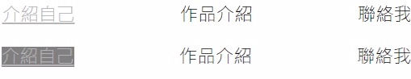
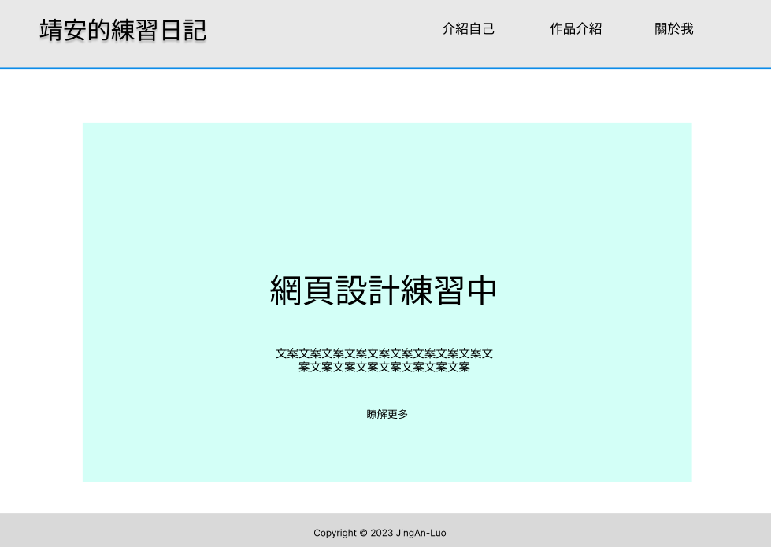
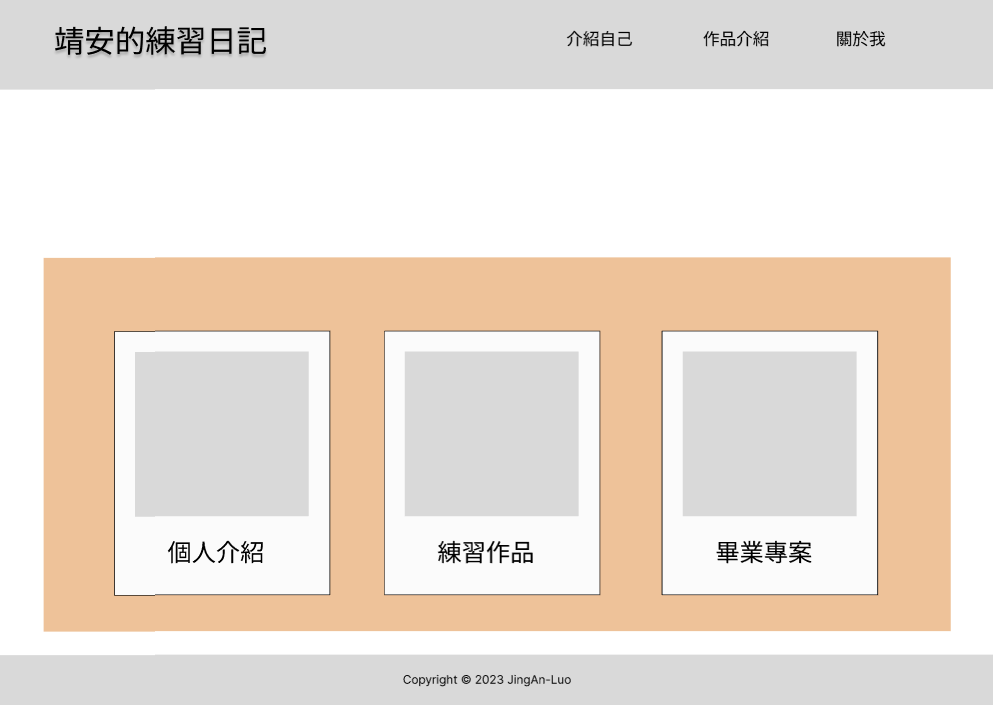
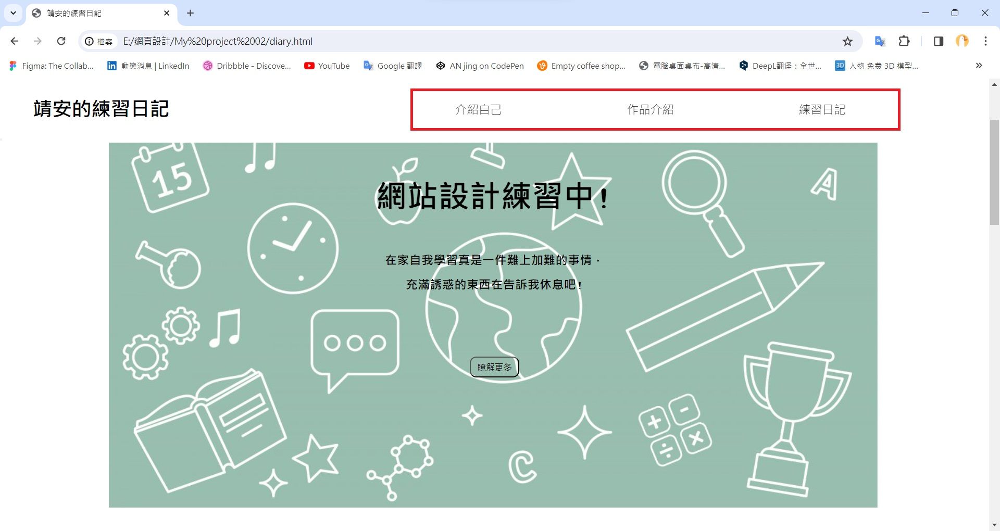
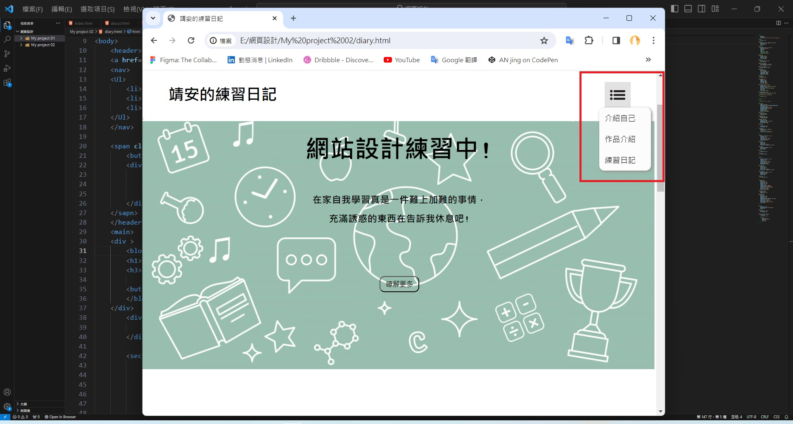

網站設計練習中!
在家自我學習真是一件難上加難的事情，
不過為了我自己我會努力的!
DAY1
花了點時間複習，當個兵甚麼東西都忘了。
先做出了首頁，因為沒有甚麼美感所以做了較簡單的風格。
上面做了四個連結(包含標題大字)，都可以點擊跳轉到頁面，
但每個頁面都還沒編輯。

連結上使用 text-decoration: none 取消原有的底線，
再透過 a:hover 屬性編輯滑鼠經過連結的的表現，
最後 a:active 屬性編輯滑鼠點擊連後的樣子。
DAY2


做完首頁就沒有想法了，不過想做個簡單的介紹區塊。 用了FIGMA先做了個模板，FIGMA真是好用。


視窗縮小後的導覽列排版很混亂，於是 做了Icon把導覽列收起來。滑鼠放上Icon後跳出選項。